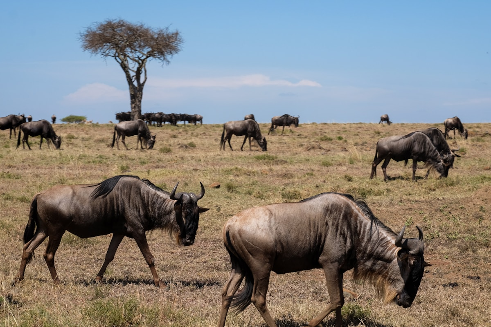
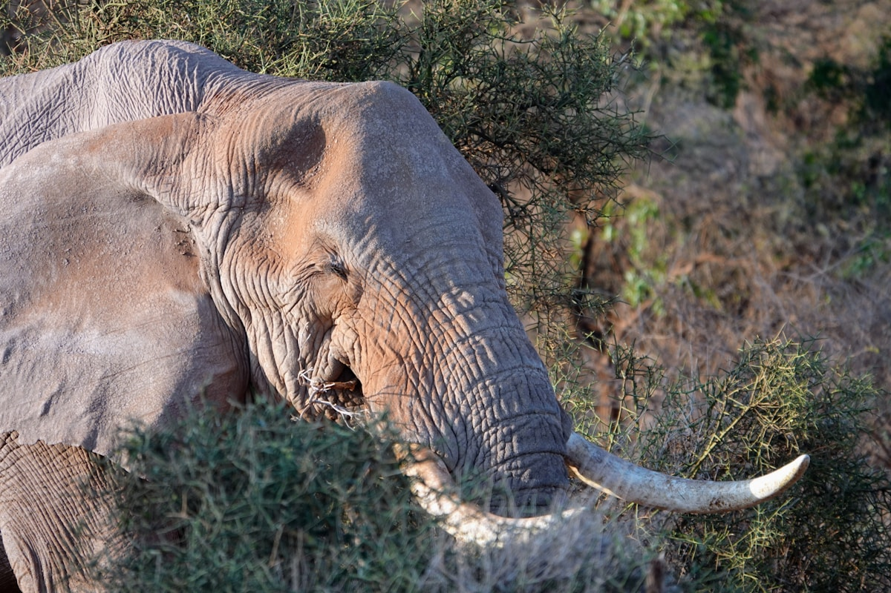
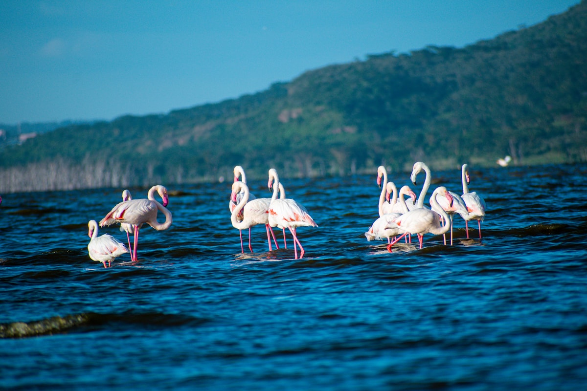
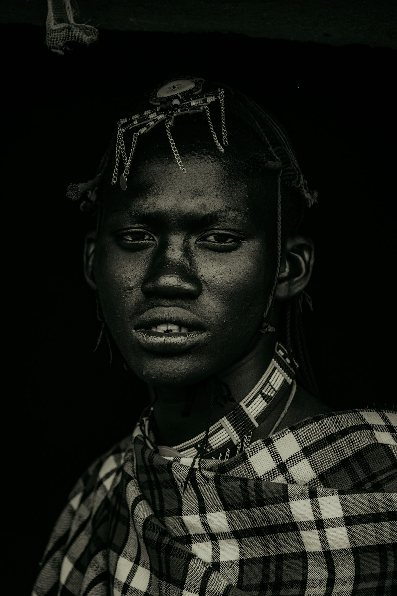
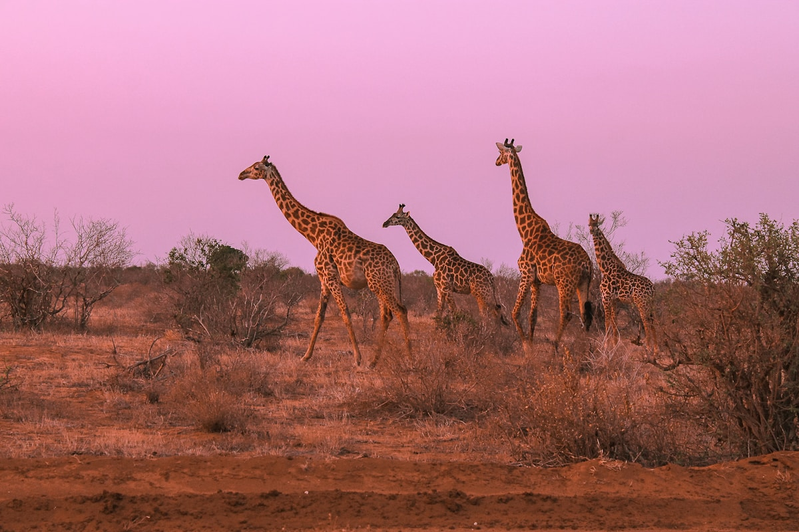
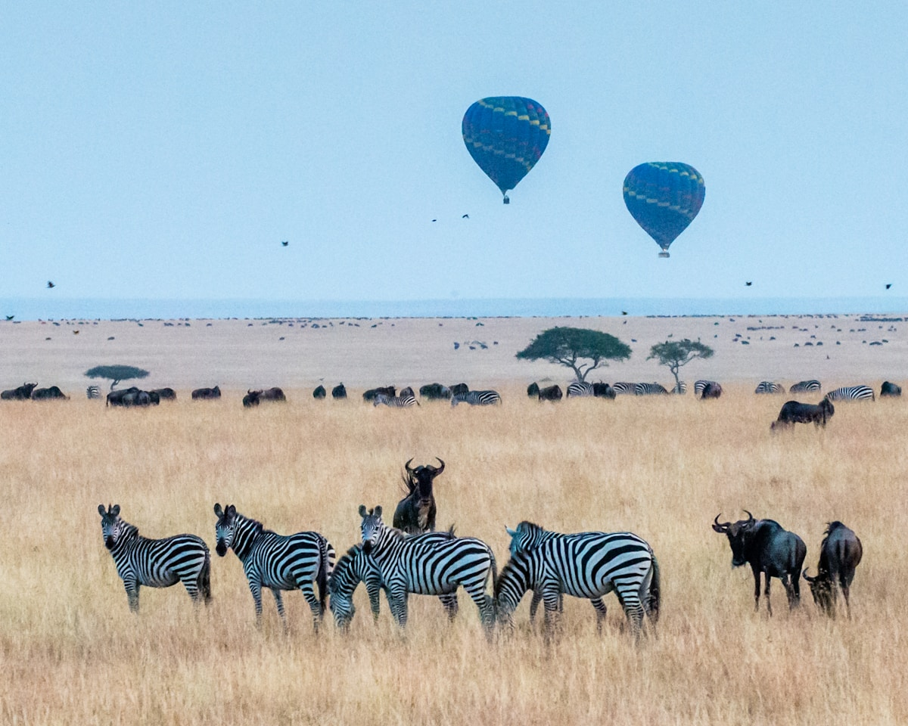
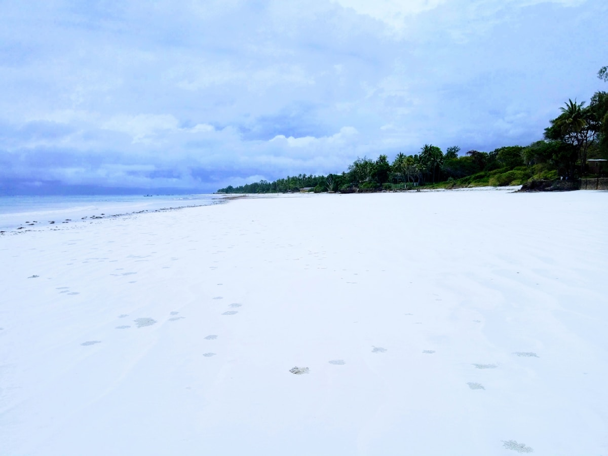
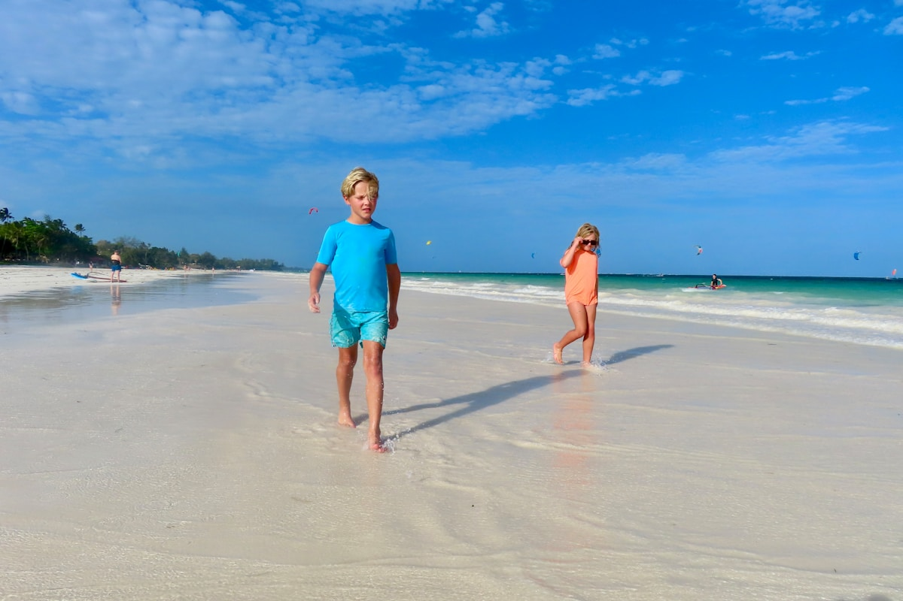

| 事项 | 结论 |
|---|---|
| 事项 | 结论 |
| 签证（最关键） | 中国护照需电子旅行许可 eTA：官网 etakenya.go.ke 申请，约 34 美元（含银行手续费），提前 3 个工作日以上、旺季建议提前 2 周；有效期 90 天 |
| 黄皮书（硬性） | 行程经亚的斯亚贝巴转机即涉黄热病流行区，须持国际疫苗接种证书（小黄本），出发前≥10 天接种黄热病疫苗 |
| 推荐方案 | 内罗毕 → 马赛马拉 → 纳库鲁 → 安博塞利 → 蒙巴萨/迪亚尼，12 天草原+海滩双主题 |
| 返程约束 | 蒙巴萨无直达国际航班，返程经内罗毕转机（国内段约 1h）；7–8 月旺季提前 1 个月订票 |
| 预算（人均） | 经济 18000–28000 ／ 标准 35000–50000 ／ 舒适 70000–110000（人民币） |
| 三件提前事 | ① 办 eTA + 打黄热病疫苗 ② 订 Safari 越野车与营地（旺季营地 3–6 个月爆满）③ 订马赛马拉/安博塞利门票 |
| 季节提醒 | 最佳 6–10 月（7–10 月角马过马拉河）；11 月–次年 5 月雨季性价比高但路况差；12–3 月迪亚尼海滩最舒服 |
| 支付 | 美元现金 + 信用卡（Visa/Mastercard）+ M-Pesa 移动支付；马赛马拉旺季门票 $200/天 |
以下为 12 天 11 晚的推荐节奏：草原段按「内罗毕出发环线」推进，海滨段收尾。每日主景点 ≤2 个，Safari 全程 4×4 越野车 + 司机兼向导。
| 日期 | 行程 | 过夜地 | 主题 |
|---|---|---|---|
| D1 抵内罗毕 | 北京✈亚的斯亚贝巴✈内罗毕（约 15h），抵达休整，晚餐百兽宴 | 内罗毕 | 抵达+预热 |
| D2 | 内罗毕→马赛马拉（公路约 5h 或威尔逊机场飞机 45min），下午首次游猎 | 马赛马拉 | 初识大草原 |
| D3 | 马赛马拉全天：热气球日出（可选）+ 角马过河 + 五大兽追踪 | 马赛马拉 | 大迁徙日 |
| D4 | 马赛马拉全天：清晨狮子捕猎 + 马赛村参观（自费） | 马赛马拉 | 深度游猎 |
| D5 | 马赛马拉→纳库鲁湖（约 4h），火烈鸟群 + 黑白犀牛 | 纳库鲁 | 湖泊观鸟 |
| D6 | 纳库鲁→内罗毕（3h）→安博塞利（4h），傍晚象群游猎 | 安博塞利 | 转场日 |
| D7 | 安博塞利全天：Observation Hill + 恩贡罗湿地象群 + 乞力马扎罗雪山 | 安博塞利 | 雪山象群 |
| D8 | 安博塞利→内罗毕（4h），长颈鹿中心 + 市区晚餐 | 内罗毕 | 都市休整 |
| D9 | 内罗毕 SGR✈蒙巴萨（约 5.5h），下午迪亚尼海滩 | 迪亚尼 | 印度洋初遇 |
| D10 | 迪亚尼全天：浮潜玻璃船 + 海鲜午餐 + 风筝冲浪 | 迪亚尼 | 海岛日 |
| D11 | 蒙巴萨老城：耶稣堡 + 石头巷漫步，下午海滩自由 | 迪亚尼 | 斯瓦希里日 |
| D12 返程 | 迪亚尼→蒙巴萨✈内罗毕✈亚的斯亚贝巴✈北京 | — | 收尾 |
以下为 12 天全程的逐小时执行时间线，可当作「当天打开照着走」的清单。标注 ※ 的可选项视体力与天气取舍。
| 时间 | 事项 |
|---|---|
| 00:10–07:15 | 北京✈亚的斯亚贝巴（ET605 约 11.5h），机上过夜 |
| 10:45–13:10 | 亚的斯亚贝巴✈内罗毕（约 2.5h），入境时出示 eTA + 黄皮书，现场拍照录指纹 |
| 14:00–15:30 | 换汇（1 元≈18 KSh）+ 办 Safaricom 电话卡 + 入住内罗毕（推荐 Westlands/市区） |
| 17:00–18:00 | 肯雅塔会展中心、自由广场车览（安全考虑不下车） |
| 18:30–21:00 | 晚餐 百兽宴 Carnivore（全球 50 佳烤肉餐厅），回酒店倒时差（比北京慢 5h） |
| 时间 | 事项 |
|---|---|
| 06:30–07:00 | 酒店早餐，司机兼向导接人，核对 Safari 预订 |
| 07:00–12:00 | 内罗毕→马赛马拉（约 250km，经纳罗克最后一段土路颠簸约 5h） |
| 12:00–13:30 | 入住帐篷营地，午餐 |
| 14:30–18:00 | 下午 Game Drive（Mara 东部）：狮子、大象、角马、长颈鹿 |
| 18:30 | 回营地日落酒会，晚餐 |
| 时间 | 事项 |
|---|---|
| 05:30–08:30 | 热气球日出（可选，$450–480/人含香槟早餐）：俯瞰草原百万角马 |
| 09:30–12:00 | 上午 Game Drive：马拉河畔等角马过河（7–10 月） |
| 12:00–13:00 | 野餐盒午餐 |
| 15:00–18:00 | 下午 Game Drive：猎豹、花豹、河马 |
| 18:30 | 篝火晚餐 |
| 时间 | 事项 |
|---|---|
| 06:30–10:00 | 清晨 Game Drive：狮子捕猎黄金时间，金合欢树下角马群 |
| 10:00–11:30 | 回营地早餐休息 |
| 11:30–13:00 | 马赛村参观（自费约 $20–30/人，收入直接支持当地社区） |
| 15:00–18:00 | 下午 Game Drive：马拉三角洲或保护区南线 |
| 18:30 | 营地晚餐 |
| 时间 | 事项 |
|---|---|
| 07:00–07:30 | 早餐后退房 |
| 07:30–11:30 | 公路约 4h 到纳库鲁（穿越东非大裂谷） |
| 12:00–13:30 | 入住湖滨酒店，午餐 |
| 14:00–17:30 | 纳库鲁湖 Game Drive：火烈鸟群 + 黑白犀牛（白犀与黑犀） |
| 18:00 | 湖滨晚餐 |
| 时间 | 事项 |
|---|---|
| 07:00–10:00 | 纳库鲁→内罗毕（约 3h） |
| 10:30–11:30 | 内罗毕午餐，短暂补给 |
| 12:00–16:00 | 内罗毕→安博塞利（约 4h，经 Namanga 边境） |
| 16:30–18:00 | 安博塞利入园：象群 + 乞力马扎罗雪山背景 Game Drive |
| 18:30 | 入住营地，晚餐 |
| 时间 | 事项 |
|---|---|
| 06:00–08:30 | 清晨 Game Drive：Observation Hill 观景台拍乞力马扎罗日出 + 象群剪影 |
| 08:30–09:30 | 回营地早餐 |
| 10:00–12:00 | 恩贡罗湿地（Enkongo Narok Swamp）看象群家族、水牛 |
| 12:00–13:00 | 午餐休息 |
| 15:00–18:00 | 下午 Game Drive：干旱湖床、鬣狗、黑面狷羚 |
| 18:30 | 营地晚餐 |
| 时间 | 事项 |
|---|---|
| 07:00–07:30 | 早餐后退房 |
| 07:30–11:30 | 安博塞利→内罗毕（约 4h） |
| 12:00–13:30 | 内罗毕午餐 |
| 14:00–16:00 | 长颈鹿中心（约 KSh1,500）：亲手喂食罗特希尔德长颈鹿 |
| 16:30–17:30 | 可选：凯伦·布利克森博物馆（《走出非洲》故居） |
| 18:30 | 内罗毕晚餐（烤肉 / 斯瓦希里菜） |
| 时间 | 事项 |
|---|---|
| 06:30 | 出发前往内罗毕火车站（Emakhandi 站） |
| 08:00–13:40 | SGR Madaraka Express：内罗毕→蒙巴萨（经济舱 KSh1,000 / 一等 KSh3,000，约 5h40m，全程空调） |
| 14:00–15:00 | 蒙巴萨站午餐（斯瓦希里海鲜） |
| 15:00–16:00 | 包车/大巴前往迪亚尼海滩（约 1h，30km 海岸线） |
| 16:30 | 入住海滩度假村，白沙滩漫步看日落 |
| 时间 | 事项 |
|---|---|
| 08:00–09:30 | 慵懒早餐，海边泳池 |
| 09:30–12:30 | 玻璃船出海 + 浮潜（约 $30–50/人）：珊瑚礁、海龟、五彩热带鱼 |
| 13:00–14:30 | 海鲜午餐（龙虾、烤剑鱼、椰子饭） |
| 15:00–18:00 | 可选：风筝冲浪、海边骑马、沙滩排球 |
| 18:30 | 沙滩日落，海鲜晚餐 |
| 时间 | 事项 |
|---|---|
| 08:00–09:00 | 迪亚尼→蒙巴萨市区（约 1h） |
| 09:30–11:30 | 耶稣堡 Fort Jesus（世界遗产，门票约 KSh1,200）：16 世纪葡萄牙要塞 |
| 11:30–13:00 | 老城漫步：石头巷、雕刻木门、香料市场 |
| 13:00–14:30 | 斯瓦希里午餐（比尔亚尼炒饭 + 椰子咖喱） |
| 15:00 | 返回迪亚尼，海滩自由活动 / 水上运动 |
| 18:30 | 海边晚餐 |
| 时间 | 事项 |
|---|---|
| 07:00–09:00 | 早餐后收拾，迪亚尼→蒙巴萨（约 1h） |
| 12:00–13:00 | 蒙巴萨✈内罗毕（国内航班约 1h） |
| 15:00–17:00 | 内罗毕转机，机场购物/退税 |
| 17:40–次日 | 内罗毕✈亚的斯亚贝巴✈北京（ET305/ET604），次日 17:10 抵京 |
必去（必去）/ 顺路（顺路）/ 可跳过（可跳过）。

必去
必去
顺路
顺路
顺路
必去
顺路图片为 Unsplash 主题图（马赛马拉大迁徙、安博塞利象群、纳库鲁火烈鸟、马赛人、长颈鹿、热气球、迪亚尼海滩均为肯尼亚实景），用于页面配图。更多免费景点：内罗毕国家博物馆、肯雅塔国际会议中心、蒙巴萨海岬灯塔。
点击左侧节点可在地图上定位；点击地图 marker 会高亮对应节点。坐标为 WGS-84 转 GCJ-02 纠偏后标注。
以下为单人、不含购物的估算，人民币计价；出发地基准北京。汇率按 1 元 ≈ 18 肯尼亚先令（KSh）估算。Safari 越野车与营地按2 人拼车计算，人多更便宜。往返机票按淡季 5000–7000 元、旺季 10000+ 元计。
| 项目 | 经济（18000–28000） | 标准（35000–50000） | 舒适（70000–110000） |
|---|---|---|---|
| 往返机票 | 转机 5000–7000 | 转机 7000–10000 | 商务/灵活 15000–20000 |
| 住宿（11 晚） | 内罗毕/纳库鲁经济酒店 + 基础营地 6000–8000 | 中档帐篷营地 15000–22000 | 奢华营地 40000–60000 |
| Safari 车与司机（7 天） | 拼车 4000–6000 | 2–3 人包车 8000–12000 | 包车 + 包机 20000–35000 |
| 门票 | 公园门票约 2500–3500 | 含热气球 4000–6000 | 多次游猎 + 包机 8000–12000 |
| 餐饮（12 天） | 营地含餐 + 城市简餐 3000–4000 | 正常用餐 6000–8000 | 度假村全包 12000–18000 |
把蒙巴萨/迪亚尼 3 天砍掉，改为内罗毕休整后返程，总预算可降至经济档下限（约 18000–22000 元）。Safari 段不变：内罗毕→马赛马拉→纳库鲁→安博塞利→内罗毕，9 天即可。适合时间紧或预算有限的玩家。
带娃推荐马赛马拉营地选带泳池的儿童友好营地，安博塞利缩短为 1 天；摄影党把热气球换成 2 次马拉河清晨蹲守（拍角马过河），并租 70–200mm 或 100–400mm 长焦。长颈鹿中心非常亲子。
| 方式 | 时长 | 参考价 | 备注 |
|---|---|---|---|
| 转机（推荐） | 北京→内罗毕 总约 13–16h（ET605 约 11.5h + 亚的斯亚贝巴中转约 2.5h） | 往返 4700–11000 元（旺季 16000+） | 埃塞俄比亚航空经亚的斯亚贝巴，中转顺路免签转机区 |
| 转机（经迪拜） | 总约 15–18h | 8000–16000 元 | 阿提哈德/阿联酋航空，中转体验更好但更贵 |
| 境内衔接 | 蒙巴萨✈内罗毕约 1h | 单程约 800–1200 元 | 返程必须经内罗毕国际转机 |
| 区域 | 价格/晚 | 优点 | 短板 |
|---|---|---|---|
| 内罗毕（2 晚） | 经济 300–500 / 标准 500–900 元 | Westlands/市区安全便利 | 堵车严重，早晚高峰避开 |
| 马赛马拉帐篷营地（3 晚） | 经济 1100–1800 / 中档 2500–4500 / 奢华 9000–15000 元 | 一价全包含三餐，Safari 方便 | 旺季翻倍且要提前 3–6 个月订 |
| 纳库鲁（1 晚） | 经济 250–400 / 标准 400–700 元 | 湖滨酒店位置好 | 小镇设施一般 |
| 安博塞利营地（2 晚） | 经济 900–1500 / 中档 1800–3500 元 | 含三餐，观象房型 | 旺季同样紧张 |
| 迪亚尼海滩（3 晚） | 经济 400–800 / 标准 900–1800 元 | 白沙滩 + 全包度假村可选 | 离蒙巴萨市区 1h |
| 蒙巴萨过渡 | 经济 300–500 元 | 机场/火车站附近方便 | 市区治安需注意 |